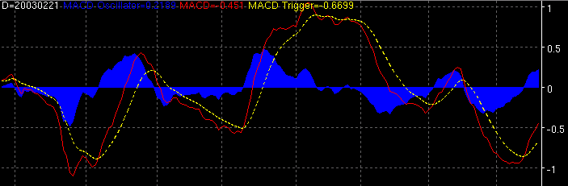

Moving Average Convergence Divergence - MACD

Parameters:
- Input - The data field the MACD is based on
- Fast Period - The period of the fast MA
- Slow Period - The period of the slow MA
- MA Type - The type of MA to use
- MACD Color - MACD color
- MACD Line Type - MACD line type
- MACD Label - The text to identify the MACD plot
- Signal Color - Signal plot color
- Signal Line Type - Signal line type
- Signal Label - The text to identify the signal plot
- Signal Period - The MA period if the signal plot
- Oscillator Color - Oscillator color
- Oscillator Line Type - Oscillator line type
- Oscillator Label - The text to identify the Oscillator
plot
Description:
Alerts:
True